第2章 新生儿颅脑
原书页 26–33 · 8 个页面区块 · 11 张配图。正文、图注与图片保持原书顺序。
| BS | brain stem | 脑干 |
| - | cerebellar hemisphere | 小脑 |
| CC | corpus callosum | 胼胝体 |
| CN | caudate nucleus | 尾状核 |
| CP | choroid plex | 脉络丛 |
| CPS | cavum of septum pellucidum | 透明隔腔 |
| CS | 扣带回 | |
| CT | cerebellar tentorium | 小脑幕 |
| FH | frontal horn | 侧脑室额角（前角） |
| FL | frontal lobe | 额叶 |
| IHF | interhemispheric fissure | 半球间裂 |
| LV | lateral ventricle | 侧脑室 |
| OH | occipital horn | 侧脑室枕角（后角） |
| OL | occipital lobe. | 枕叶 |
| T | thalamus | 丘脑 |
| V | cerebellar vermis | 小脑蚓部 |
| V3 | third ventricle | 第三脑室 |
| V4 | fourth ventricle | 第四脑室 |
一、 前囟区中线旁矢状纵切面
前囟区中线旁矢状纵切面见图2-1。
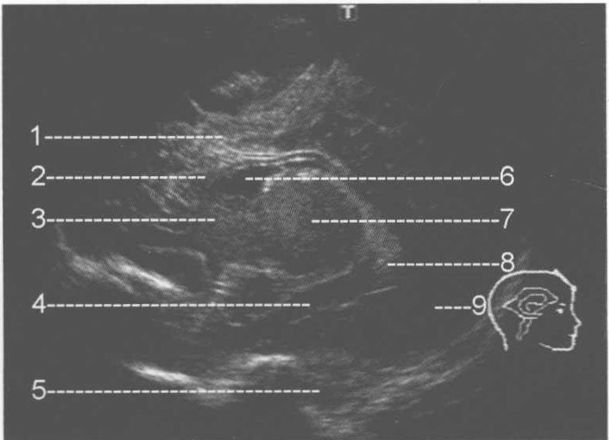
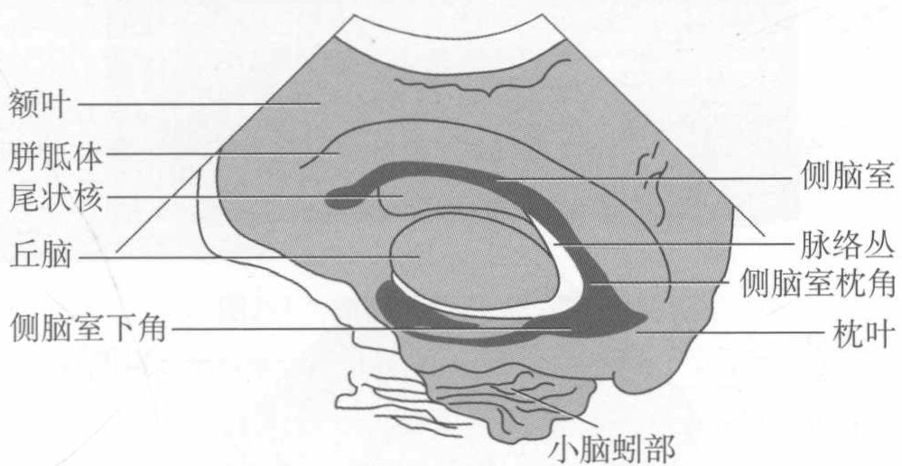
图2-1 前囟区中线旁矢状纵切面图
注：1. 额叶；2. 胼胝体（CC）；3. 尾状核（CN）；4. 侧脑室下角；5. 小脑蚓部（V）；6. 侧脑室（LV）前角；7. 丘脑（T）；8. 脉络丛（CP）；9. 枕叶（OL）
【扫查方法】 平卧位，探头矢状位纵向置于前囟正中线旁 0.5 ∼ 1.0 cm 处，声束指向下后方。
【断面结构】显示大脑半球、侧脑室、丘脑、尾状核及小脑的矢状断面。能显示侧脑室的前角、体部、枕角及下角，体部称为房部，前角称为额角，枕角称为后角，下角称为颞角。观察额叶和枕叶的脑组织实质回声。
【测量方法及正常值】测量侧脑室矢状径即上下径，分别在侧脑室的前角和体部测量，正常新生儿的上下径＜4mm。一般测枕角（即后角）的前后径，方法：
从丘脑后缘到枕角尖的距离。正常新生儿的前后径为 8.7 ∼ 24.7 mm (Davies)。【临床价值】诊断颅内额叶及枕叶的占位性病变、脑出血、脑室出血、脑积水、脉络丛囊肿、侧脑室完全消失（裂缝样侧脑室）、脑水肿等。脑室出血时脑室的后部首先扩张。
二、 前囟区正中线矢状纵切面
前囟区正中线矢状纵切面见图2-2。
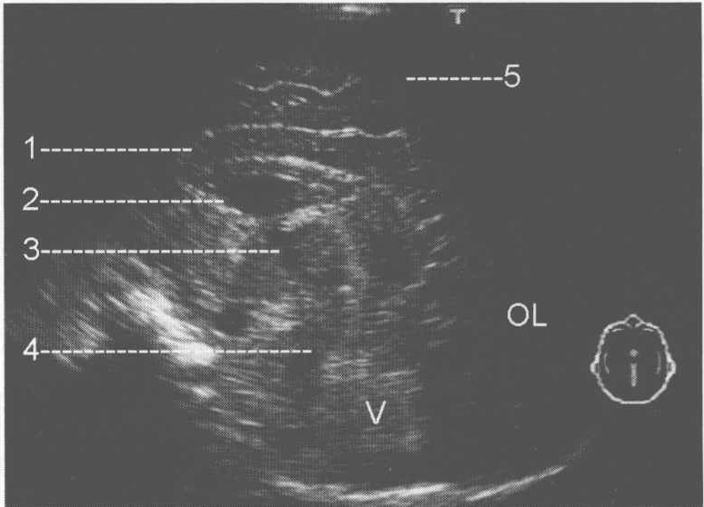
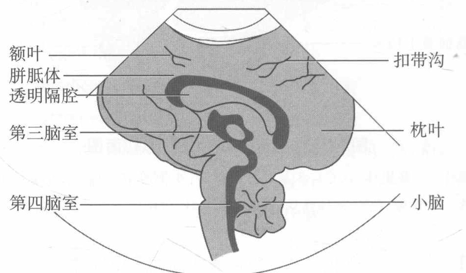
图2-2 前囟区正中线矢状纵切面
注：1. 胼胝体（CC）；2. 透明隔腔（CPS）；3. 第三脑室（V3）；4. 第四脑室（V4）；5. 扣带沟（CS）
【扫查方法】平卧位，探头矢状位纵向置于前囟正中线处，声束指向下后方。【断面结构】显示大脑半球、透明隔、胼胝体、第三脑室、第四脑室及小脑的矢状断面。能显示胼胝体外侧的扣带沟。观察额叶和枕叶的脑组织回声。
【测量方法及正常值】 测量透明隔的矢状径，分别在侧脑室的角部、体部及枕角处测量。
三、 前囟区经丘脑冠状横切面
前囟区经丘脑冠状横切面见图2-3。
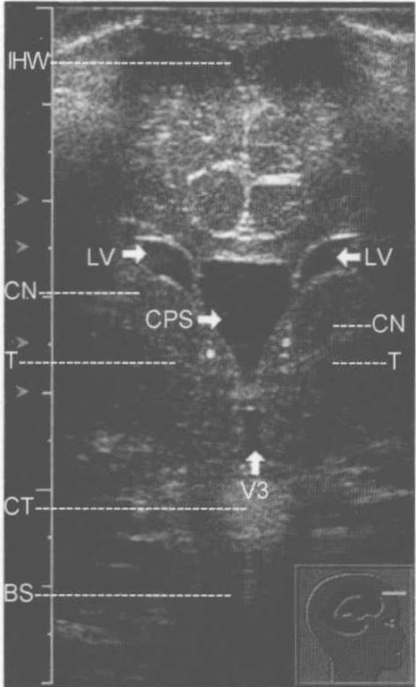
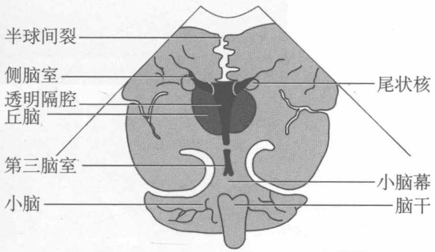
图2-3 前囟区经丘脑冠状横切面
IHW. 半球间裂；LV. 侧脑室；CPS. 透明隔腔；T. 丘脑；CT. 小脑幕；BS. 小脑与脑干
【扫查方法】平卧位，探头冠状位横向置于前囟，声束指向下方，显示丘脑平面。【断面结构】显示两侧大脑半球、透明隔、侧脑室、第三脑室及小脑的冠状断面；显示侧脑室的体部及尾状核的体部；显示半球间裂和小脑幕。可观察两侧颞叶的脑组织。前角应为三角形。脑室壁很薄。
【测量方法及正常值】 测量透明隔腔宽度、侧脑室的前角宽度、第三脑室宽度。国外资料显示侧脑室前角为 0 ∼ 2.9mm，一般应 ≤ 3mm。一般认为， 4 ∼ 6mm 为轻度扩张， 7 ∼ 10mm 为中度扩张， > 10mm 为重度扩张。大脑半球间裂的宽度：为大脑半球间裂的水平最大宽度，正常值 0.8 ∼ 8.2mm。第三脑室宽度 < 1.1mm。透明隔腔宽度 < 6mm。
【临床价值】诊断颅内颞叶及小脑的占位性病变、脑出血、早产儿透明隔腔的增宽、脑积水等。
四、 前囟区经侧脑室体部冠状横切面
前囟区经侧脑室体部冠状横切面见图2-4。
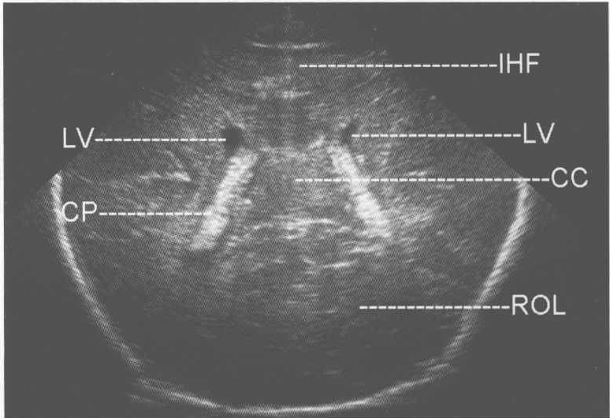
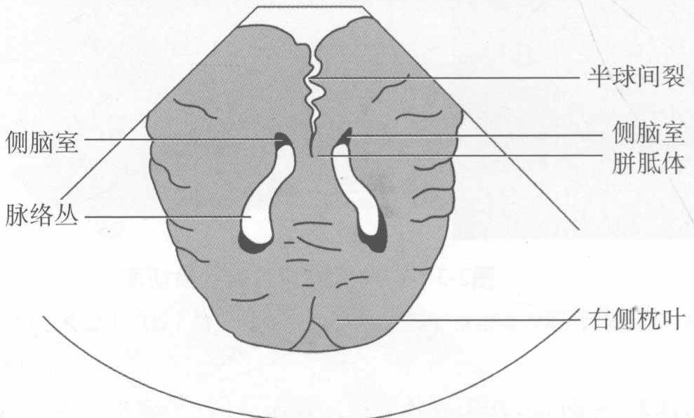
图2-4 前囟区经侧脑室体部冠状横切面
【断面结构】 显示两侧大脑半球、侧脑室前角及脉络丛的冠状断面。显示侧脑室的体部及颞角；显示半球间裂。可观察两侧颞叶、顶叶及枕叶的脑组织。
【测量方法及正常值】 测量侧脑室前角，新生儿正常值 0 ∼ 2.9mm，一般应 ≤ 3mm，一般认为 4 ∼ 6mm 为轻度积水， 7 ∼ 10mm 为中度积水， > 10mm 为重度积水。
【扫查方法】平卧位，探头冠状位横向置于前囟，声束指向下方，显示侧脑室及脉络丛平面。
枕角（后角）的横径一般应<10mm。
【临床价值】诊断颅内的占位性病变、脑出血、脑积水、脉络丛囊肿等。
五、 颞区经侧脑室斜切面
颞区经侧脑室斜切面见图2-5。
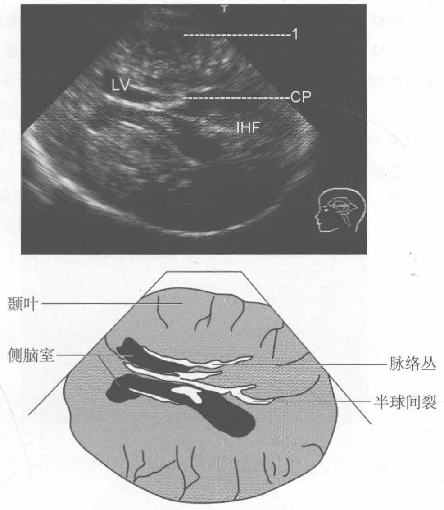
图2-5 颞区经侧脑室斜切面
注：1. 颞叶（temporal lobe）
【扫查方法】侧卧位，探头平行于颅底水平置于颞窗，声束指向后上方，显示侧脑室平面。
【断面结构】显示两侧大脑半球、侧脑室及脉络丛的斜断面，侧脑室的体部和后角，以及半球间裂和脉络丛。可观察两侧颞叶、额叶的脑组织。
【测量方法及正常值】 测量侧脑室的体部及两侧大脑半球的横径。国内正常标准：侧脑室体部宽径为新生儿＜4mm，成年人＜25mm。侧脑室比率（侧脑室外径至中线距离占脑中线至颅骨板之间的距离之比）应小于0.5。国外Johnson等发现，在早产儿和足月儿中此切面获得的平均侧脑室体部宽度接
近，足月儿为1.1cm（0.9～1.3cm），早产儿为1cm（0.5～1.3cm）。侧脑室宽度与大脑半球宽度之比也是接近的，足月儿为28%，早产儿为31%。显然，国外报道的正常值远高于国内测量值，应该以国内报道为准。
【临床价值】诊断颅内的占位性病变、脑实质出血、脑水肿、脑积水等。值得注意的是侧脑室不对称是很常见的，40%～70%的患儿存在。
孕 35～45 周胎儿的侧脑室体积最小，早产儿可能普遍存在脑室不同程度的扩张。
六、 颞区经丘脑斜切面
题区经丘脑斜切面见图2-6。
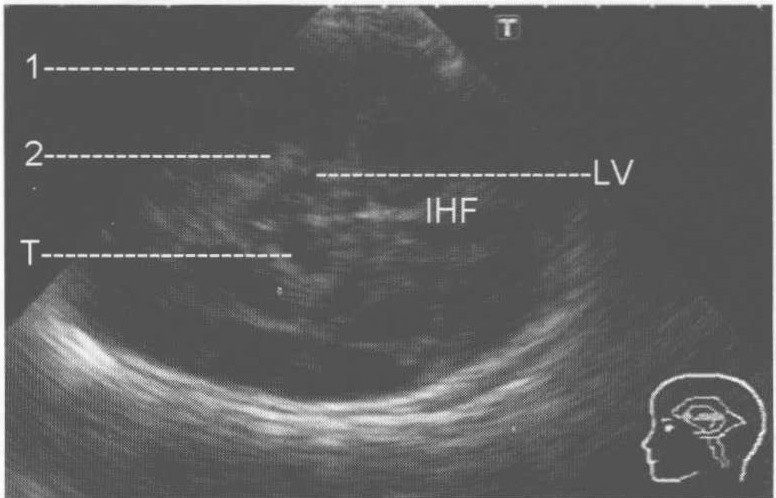
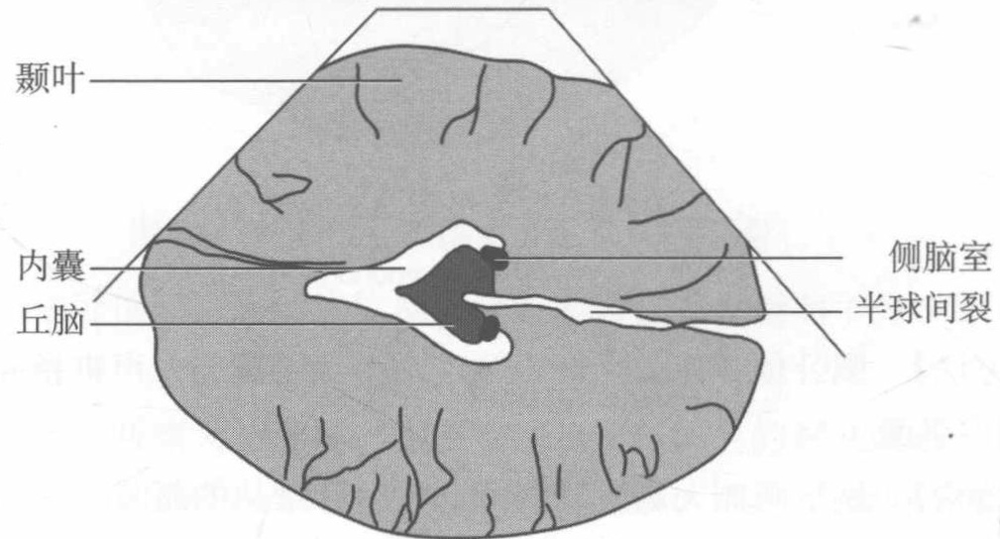
图2-6 颞区经丘脑斜切面
注：1. 颞叶（temporal lobe）；2. 内囊（internal capsule）
【扫查方法】侧卧位，探头平行于颅底水平，置于颞窗，声束指向后方，显示丘脑平面。
【断面结构】 显示两侧大脑半球、丘脑、侧脑室及内囊的斜断面。显示侧脑室的前角，半球间裂和内囊的前后肢。可观察两侧颞叶、额叶脑组织。有时可显示第三脑室和部分小脑蚓部。可显示颅底动脉血管。
【测量方法及正常值】 测量侧脑室的前角、丘脑及两侧大脑半球的横径。
1. 小脑横径 平均值 6cm，标准差 0.2。
2. 头部中线外积液
（1）测颅骨皮质宽度（cranialcortical width，CCW）：即颅骨内缘至邻近脑皮质表面的距离。
（2）窦皮质宽度（ninocortical width，SCW）：即上矢状窦壁至皮质表面的距离。
(3) 大脑半球间的宽度 (interhemisphere width, IHW)：即大脑半球间裂的水平最大宽度。
婴儿头部中线外积液统计见表2-1。
表2-1 婴儿头部中线外积液统计
| 作者 | 年龄 | CCW(mm) | SCW(mm) | IHW(mm) |
| Amstrong | 24 ~ 36 周早产儿 | < 3.5 | ||
| Frankel | 足月儿 | < 3.3 | ||
| Libicherand Troger | < 1 岁 | < 4 | < 3 | < 6 |
| Fessell | 巨颅症患儿 | < 10 | < 10 |
3. 侧脑室
（1）经颞区侧脑室测量：Johnson 等发现在早产儿和足月儿中此切面获得的平均侧脑室体部宽度接近，足月儿为 1.1cm（0.9～1.3cm），早产儿为 1cm（范围 0.5～1.3cm）。侧脑室宽度与大脑半球宽度之比也是接近的，足月儿 28%，早产儿 31%。
（2）经前囟侧脑室测量法：侧脑室前角 0 ∼ 2.9 mm，一般应 ≤ 3 mm，一般认为 4 ∼ 6 mm 为轻度积水， 7 ∼ 10 mm 为中度积水， > 10 mm 为重度积水。
【临床价值】诊断颅内的占位性病变、脑实质出血、硬脑膜外血肿、脑积水及内囊、丘脑病变等。可诊断颅底血管病变。
（牛海燕）